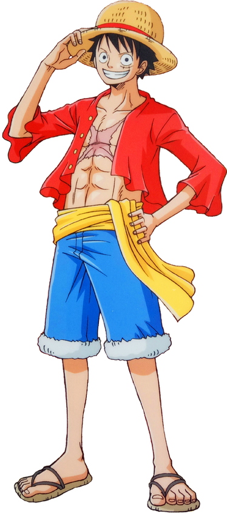
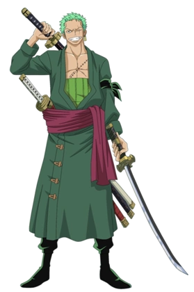
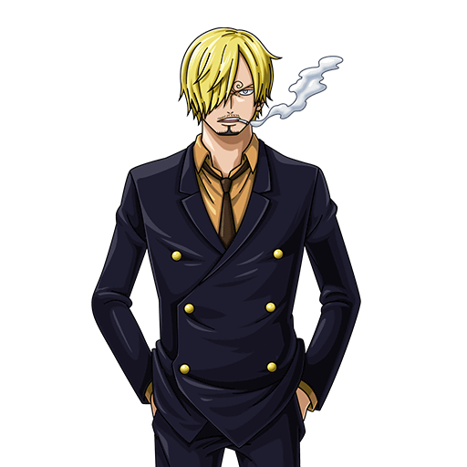
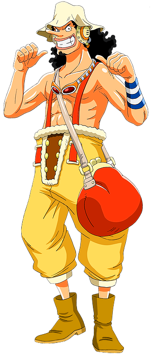
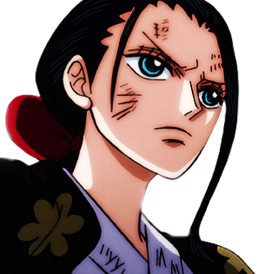
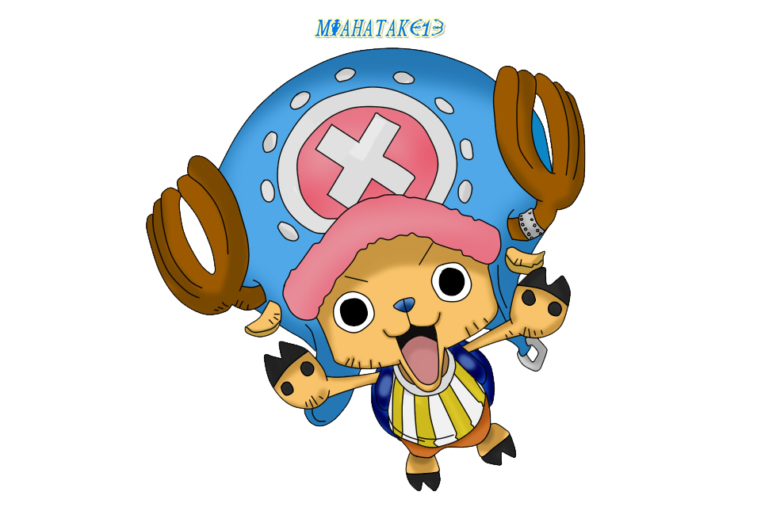
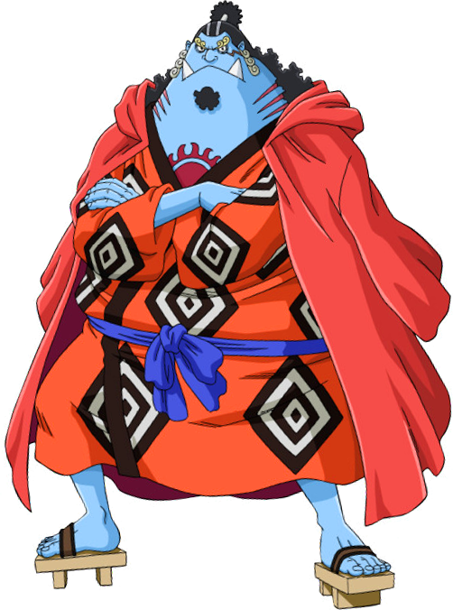

Piratas de Sombrero de Paja
Los Piratas de Sombrero de Paja (麦わらの海賊団 Mugiwara no Kaizoku-dan?), principalmente conocidos
como
la Tripulación de Sombrero de Paja (麦わらの一味 Mugiwara no Ichimi?), y también como Banda del
Sombrero de Paja, es una banda de piratas originaria del East Blue, pero tiene miembros de
diferentes partes del mundo. Ellos son el foco y los principales protagonistas de la trama
del
manga y franquicia de One Piece, siendo capitaneados por el protagonista principal de la
serie,
Monkey D. Luffy
Se les conoce como los de «Sombrero de Paja», por el característico sombrero de su capitán,
el
cual le fue cedido por Shanks el Pelirrojo, y fueron conocidos como «Piratas de Sombrero de
Paja» gracias a Smoker en Arabasta. La banda navegó en el Going Merry, su primer barco
oficial, hasta el arco de Water 7. Durante el arco del regreso a Water 7, Franky e Iceburg
les
construyeron un nuevo barco, al que Iceburg llamó Thousand Sunny, a pesar de las
proposiciones
de nombres por parte de los miembros de la tripulación. Actualmente, los Piratas de Sombrero
de
Paja están constituidos por los diez miembros cuyas recompensas
suman un total de
Belly 8.816.001.000.
Tras los eventos acarecidos en el Archipiélago Sabaody, los primeros nueve miembros fueron
separados unos de otros. Durante dos años todos entrenaron en sus relativos destinos en los
que
cayeron tras la separación, llegando a ser más poderosos para ayudarse los unos a los otros.
Pasado el tiempo se reunieron de nuevo y desde entonces se han convertido en un gran poder
activo en el Nuevo Mundo, adquiriendo una gran expansión militar, agregando además a la
tripulación a un antiguo miembro de los Siete Señores de la Guerra del Mar, Jinbe. Incluso
han logrado tomar posesión de una de las armas vivientes de la miembro de los Cuatro
Emperadores
Big Mom, Zeus, quien es ahora un siervo incondicional de Nami y una nueva arma para la
tripulación.
Tras los eventos acaecidos en el asalto a Onigashima en el arco del país de Wano, la
tripulación
ahora es capitaneada por uno de los Cuatro Emperadores tras el ascenso de Monkey D. Luffy a
Emperador luego de salir victorioso en su enfrentamiento contra Kaidou.

Monkey D. Luffy
Monkey D. Luffy (モンキー・Ｄ・ルフィ Monkī Dī Rufi?), más conocido como
Luffy
«Sombrero de Paja» (麦わらのルフィ
Mugiwara no Rufi?), es el protagonista principal de la serie de manga y anime One Piece. Es
el
capitán y fundador de los Piratas de Sombrero de Paja así como un de los Cuatro Emperadores
que
gobiernan los mares del Nuevo Mundo.[19] Comió una fruta del diablo llamada fruta Gomu Gomu,
que
le convirtió en un hombre de goma. Además de esto, posee varias habilidades que le hacen ser
un
pirata más que especial; un gran ejemplo de ello es la capacidad de usar el haoshoku haki
―que
sólo lo posee una persona dentro de un millón― y poseer también los otros dos tipos de haki.

Roronoa Zoro
Roronoa Zoro (ロロノア・ ゾロ Roronoa Zoro?), conocido como El Cazador de
Piratas (海賊狩り Kaizoku
Gari?), es el combatiente principal de los Piratas de Sombrero de Paja, uno de sus dos
espadachines y uno de los oficiales principales de la Gran Flota de Sombrero de Paja, así
como
un antiguo cazarrecompensas.
Nacido en el East Blue, Zoro es hijo de Tera y Roronoa Arashi, nieto de Shimotsuki Furiko y
Roronoa Pinzoro, y sobrino nieto de Shimotsuki Ushimaru, lo que le convierte en descendiente
matrilineal tanto de la familia Shimotsuki del País de Wano como del legendario samurái
Shimotsuki Ryuma. Fue el primer miembro en unirse a la tripulación, y es considerado
parte del Trío Monstruoso (怪物三人組 Kaibutsu San-ningumi?) junto a Luffy y Sanji. Su sueño
es convertirse en el mejor espadachín del mundo. Zoro también es considerado uno de los Once
Supernovas que forman parte de «la peor generación».

Vinsmoke Sanji
Sanji (サンジ Sanji?), conocido como Pierna Negra (黒脚 Kuro Ashi?) y
nacido como Vinsmoke Sanji
(ヴィンスモーク・サンジ Vinsumōku Sanji?),[3] es el cocinero de los Piratas de Sombrero de Paja, así
como uno de los oficiales principales de la Gran Flota de Sombrero de Paja. Es el quinto
miembro de la tripulación, y el cuarto en unirse. Él nació en el North Blue, siendo el
primer tripulante en no ser originario del East Blue.
Nacido como el cuarto hijo de la familia Vinsmoke, y por ende como uno de los príncipes
del Reino de Germa, Sanji se exilió de su país y renegó de su familia, yéndose al East Blue
y pasando a trabajar como cocinero en el Baratie, hasta que decidió unirse a la banda. Es
considerado parte del Trío Monstruoso (怪物三人組 Kaibutsu San-ningumi?) junto a Luffy y Zoro; y,
como tal, es uno de los combatientes más fuertes de la tripulación. Su sueño es encontrar el
mar legendario conocido como All Blue.

Usopp el
rey de
los francoti-
radores
Usopp (ウソップ Usoppu?) es el francotirador de los Piratas de
Sombrero de Paja y uno de los oficiales principales de la Gran Flota de Sombrero de Paja. Es
el cuarto miembro de la tripulación y el tercero en unirse oficialmente. A pesar de
abandonar la banda en el arco de Water 7, se volvió a unir en el arco del regreso a Water 7.
Es proveniente de la villa Syrup en el East Blue. Ahí ejerció como capitán de los Piratas de
Usopp, pero tras los eventos del arco de Villa Syrup, se unió a los Sombrero de Paja. Su
sueño es convertirse en un valiente guerrero de los mares como su padre. Su recompensa
actual es de Belly500.000.000.

Nico Robin
Nico Robin (ニコ・ロビン, Niko Robin) es un personaje ficticio de la
serie manga One Piece. Es la séptima integrante de la tripulación de los Piratas de Sombrero
de Paja, teniendo el puesto de arqueóloga, y fue anteriormente la Vice-Presidenta de la
organización criminal Baroque Works. Comió una Fruta del Diablo del tipo Paramecia, la Fruta
Flor Flor, la cual le permite hacer florecer extremidades de su cuerpo en otras superficies.
Es originaria del West Blue. Su sueño es conocer la verdadera historia del mundo
investigando en los Poneglyphs.

Nami Gata Ladrona
Nami (ナミ Nami?), apodada Gata Ladrona (泥棒猫 Dorobō Neko?), es
una pirata y la navegante de los Piratas del Sombrero de Paja , así como una de los
oficiales principales de la Gran Flota de Sombrero de Paja. Es el tercer miembro de la
tripulación y la segunda en unirse, haciéndolo oficialmente durante el arco de Arlong
Park.
Ella era anteriormente un miembro de los Piratas de Arlong e inicialmente se unió a los de
Sombrero de Paja con el fin de robarles, pero se unió oficialmente tras rebelarse contra
Arlong y su posterior derrota a manos de Luffy. Actualmente posee una recompensa de
Belly366.000.000.

Brook Soul King
Brook (ブルック Burukku?), conocido como Soul King (ソウルキング Souru
Kingu?), es el músico de los Piratas de Sombrero de Paja, uno de sus dos espadachines y uno
de los oficiales principales de la Gran Flota de Sombrero de Paja. Es el noveno miembro de
la tripulación y el octavo en unirse, haciéndolo al final del arco de Thriller Bark.
Brook consumió la fruta Yomi Yomi, que le permitió volver a la vida después de la muerte una
vez. Brook aprendió con el tiempo a aprovechar más profundamente los poderes de su fruta del
Diablo, dándole un control significativo sobre su propia alma y las almas de los demás.

Franky Hombre de Hierro
Franky (フランキー Furankī?), apodado el Hombre de Hierro (鉄人
tetsujin?), es el carpintero naval de los Piratas de Sombrero de Paja y uno de los oficiales
principales de la Gran Flota de Sombrero de Paja. Es el octavo miembro de la tripulación y
el séptimo en unirse, haciéndolo al final del Arco del regreso a Water 7.
Nacido como Cutty Flam (カティ・フラム Kati Furamu?) y originario del South Blue, Franky fue un
miembro de los Tom's Workers, hasta que un incidente que dañó su cuerpo le requirió
convertirse en un cyborg para curarse. Posteriormente se convertiría en el líder de la
familia Franky, un grupo de cazarrecompensas y desmanteladores de barcos, adoptando su
nombre actual para ocultar su identidad.

Tony Tony Chopper
Tony Tony Chopper (トニートニー・チョッパー Tonī Tonī Chopā?) es el médico de
los Piratas de Sombrero de Paja, así como uno de los oficiales principales de la Gran Flota
de Sombrero de Paja. Es un reno que comió la fruta Hito Hito de la isla de Drum. Él es el
sexto miembro de la tripulación y el quinto en unirse a ella.

Jinbe el Caballero del Mar
Jinbe el Caballero del Mar (海侠のジンベエ Kaikyō no Jinbē?) es el
timonel de los Piratas de Sombrero de Paja y uno de los oficiales principales de la Gran
Flota de Sombrero de Paja, siendo el décimo miembro de la banda y el noveno en unirse. Es
un gyojin tiburón ballena, que sirvió como antiguo capitán de los Piratas del Sol y
como miembro de los Siete Señores de la Guerra del Mar.
Su nombre fue mencionado por primera vez por Yosaku cuando explicó el sistema de los Siete
Señores de la Guerra del Mar. Sin embargo, fue introducido mucho más tarde en el arco de
Impel Down. Renunció a su título como uno de los Siete Señores de la Guerra del Mar en la
Batalla de Marineford, aliándose a los Piratas de Barbablanca. Durante la guerra formó
una amistad con Monkey D. Luffy, y más tarde se alió con él para evitar el golpe de estado
de los Nuevos Piratas Gyojin a la familia Neptune y al Reino de Ryugu. Incluso fue invitado
a unirse a los Piratas de Sombrero de Paja, pero declinó debido a que aún estaba afiliado a
Big Mom; sin embargo, afirmó que una vez termine sus asuntos pendientes él aceptaría y se
uniría a la tripulación.
